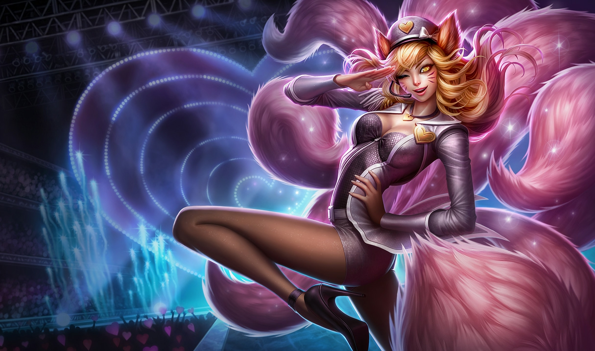

Skin em homenagem ao plugin firefox.
Skin baseada em uma bandinha feminina japonesa.
Skin que saiu quando eu não estava jogando e agora é legada.
Skin mais phodastica de todas.
Recebe uma carga de Furto de Essência sempre que um de seus feitiços atinge um inimigo (máx.: 3 cargas por feitiço). Ao atingir 9 cargas, o próximo feitiço de Ahri irá curá-la a cada vez que atinge um inimigo.
Lança e recupera seu orbe, causando Dano Mágico no trajeto de ida e Dano Verdadeiro na volta. Ahri recebe Velocidade de Movimento enquanto seu orbe estiver em movimento.
Causa 40/65/90/115/140 (+35% de Poder de Habilidade) de Dano Mágico no caminho de ida e 40/65/90/115/140 (+35% de Poder de Habilidade) de Dano Verdadeiro no caminho de volta.
Ahri libera três fogos de raposa que travam alvo e atacam inimigos próximos.
Cria 3 fogos de raposa que travam mira em inimigos próximos (priorizando campeões), causando 40/65/90/115/140 (+40% de Poder de Habilidade) de Dano Mágico.Inimigos atingidos por mais de um fogo de raposa recebem 30% de dano de cada fogo de raposa adicional, com o máximo de 0 de dano a um único inimigo.
Ahri lança um beijo que causa dano e encanta um inimigo que encontre, fazendo com que andem inofensivamente em direção à ela.
Sopra um beijo que causa 60/95/130/165/200 (+50% de Poder de Habilidade) de Dano Mágico e encanta um inimigo, fazendo com que ele caminhe inofensivamente na direção de Ahri por 1/1.25/1.5/1.75/2 segundo(s).
Ahri corre adiante e dispara raios de essência, causando dano em 3 inimigos próximos (priorizando Campeões). Ímpeto Espiritual pode ser lançado até três vezes antes de entrar em Tempo de Recarga.
Lepidamente avança e dispara 3 raios de essência em inimigos próximos (priorizando campeões), causando 70/110/150 (+30% de Poder de Habilidade) de Dano Mágico. Pode ser lançado até três vezes dentro de 10 segundos antes de iniciar o Tempo de Recarga.
Ao contrário de outras raposas que povoavam os bosques do sul de Ionia, Ahri sempre sentiu a estranha conexão ao mundo mágico que existia em sua volta; uma ligação incompleta, de certa forma. Em seu coração ela sentia que estava vivendo em um corpo inadequado, e sonhava em um dia se tornar humana. Este objetivo parecia estar eternamente fora de alcance, até que ela se viu em meio a uma guerra humana. Era uma cena terrível: o terreno obscurecido pelas formas de soldados feridos e abatidos. A um deles ela sentiu compaixão: um homem de robe circulado por um campo mágico diminuto, cuja vida se esvaía rapidamente. Ela se aproximou e algo dentro dela aconteceu, chegando ao homem de uma maneira que ela não pôde compreender.
A essência vital dele foi derramada sobre ela, carregada em fios invisíveis de magia. A sensação era, ao mesmo tempo, intoxicante e esplendorosa. Ao fim de seu delírio, estava em deleite quando se viu mudada. O pelo branco e liso deu lugar a um corpo alto e esguio - a mesma forma dos humanos que aos seus pés estavam.
No entanto, embora ela parecesse humana, sabia que na verdade a transformação fora incompleta. Uma criatura astuta, adaptou-se aos costumes da sociedade humana e usou sua beleza inigualável para atrair homens inocentes, enfeitiçando-os com sedução para consumir a essência de vida que neles havia. Alimentar-se de seus desejos a aproximou cada vez mais de seu sonho, mas conforme ela tirava vidas, uma estranha sensação de arrependimento passou a se acumular. Estava incomodada com ações que nunca a atrapalharam enquanto raposa e percebeu que não poderia superar os limites de sua moralidade em evolução. Em busca de uma solução, Ahri encontrou o Instituto da Guerra, lar dos magos mais talentosos de Runeterra. Eles a ofereceram uma chance de manter sua humanidade sem mais danos ao servir em League of Legends.
A misericórdia é um luxo e também uma responsabilidade humana.